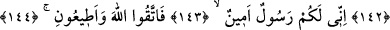
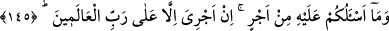
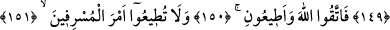
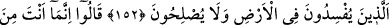
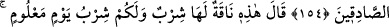
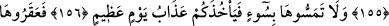
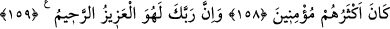

SEN DE ANCAK
BİZİM GİBİ BİR İNSANSIN
141. Semûd (kavmi) de peygamberleri yalancılıkla suçladı.
142. Kardeşleri Sâlih onlara şöyle demişti: (Allah’a karşı gelmekten) sakınmaz
mısınız?
143. Bilin ki, ben size gönderilmiş güvenilir bir elçiyim.
144. Artık Allah’a karşı gelmekten sakının ve bana itaat edin.
145. Buna karşı sizden hiçbir ücret istemiyorum. Benim ecrimi verecek olan,
ancak âlemlerin Rabbidir.
146. Siz burada, güven içinde bırakılacak mısınız (sanırsınız)?
147. “Böyle bahçelerde, çeşme başlarında?”
148. “Ekinlerin, salkımları sarkmış hurmalıkların arasında?”
149. (Böyle sanıp) dağlardan ustaca evler yontuyorsunuz (oyup yapıyorsunuz).
150. Artık Allah’tan korkun ve bana itaat edin.
151. “O aşırıların emrine uymayın.”
152. “Yeryüzünde bozgunculuk yapıp dirlik düzenlik vermeyenler(in sözüyle
hareket etmeyin).
153. Dediler ki: Sen, olsa olsa iyice büyülenmiş birisin!